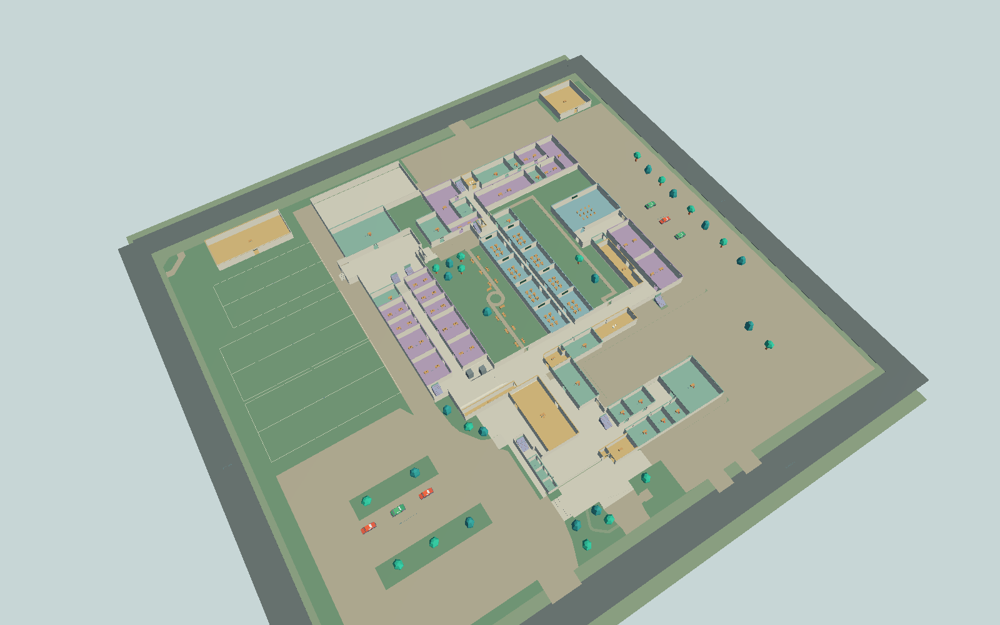
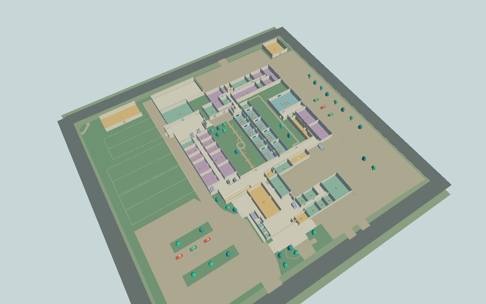
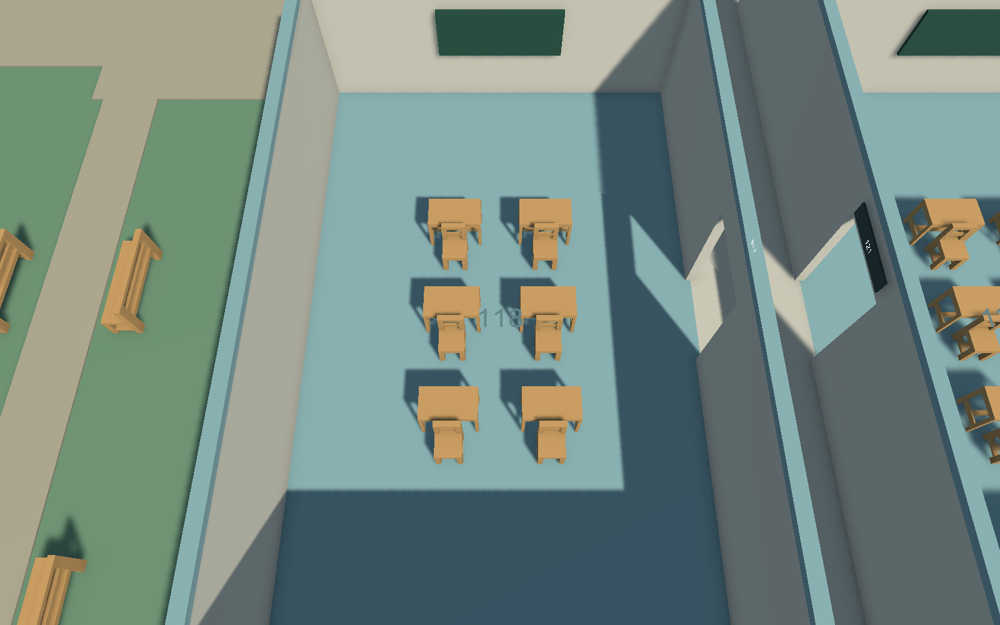
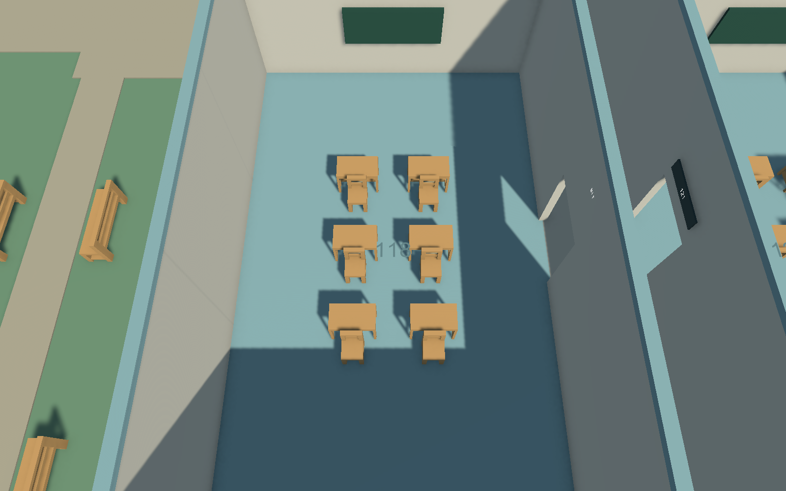
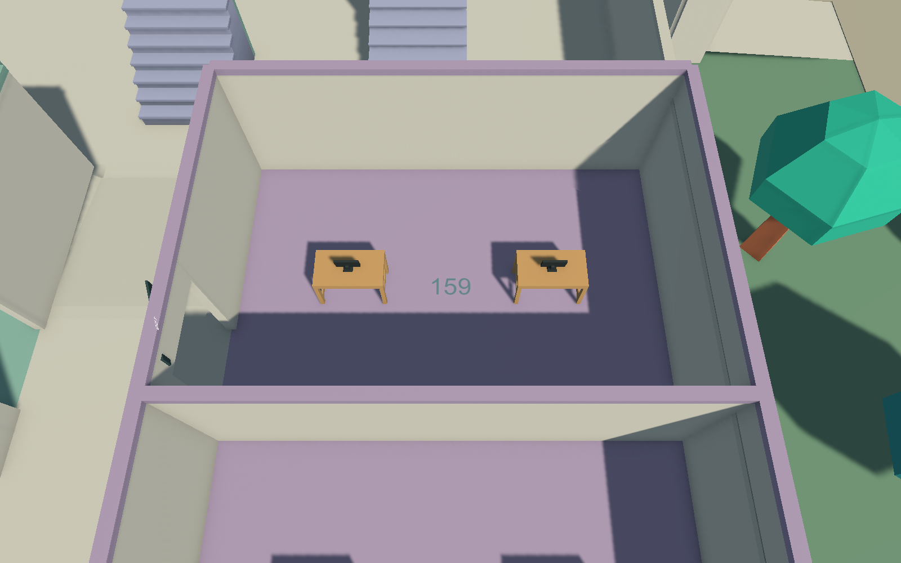
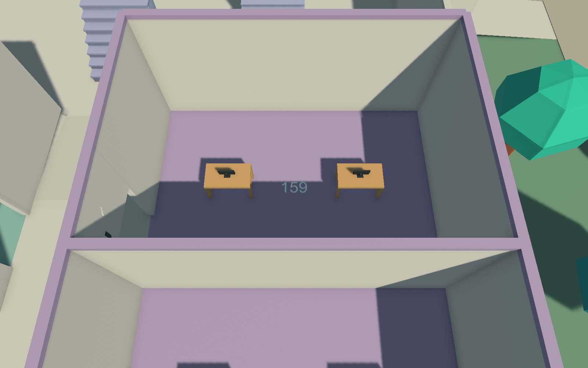
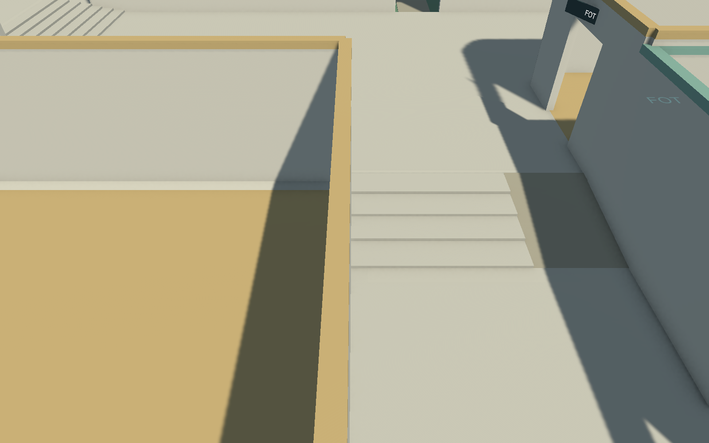
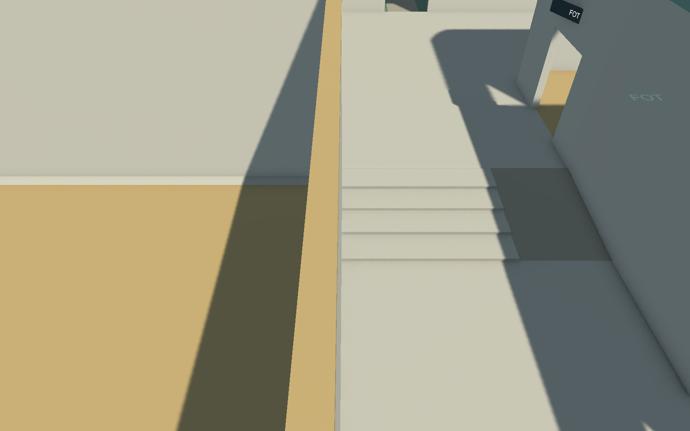

Mapa UTN · v01 / v02
Misma distribución. Paredes de 4 m, puertas de 2 m y organización por alas. Izquierda: versión anterior; derecha: v02.
Vista general

v01 · paredes de 3 m
v02 · paredes de 4 mAula del ala vieja

v01 · paredes de 3 m
v02 · paredes de 4 mLaboratorio del ala nueva

v01 · paredes de 3 m
v02 · paredes de 4 mAcceso y desnivel

v01 · paredes de 3 m
v02 · paredes de 4 m